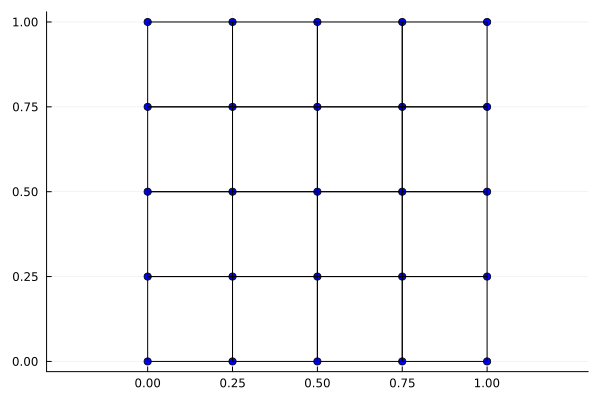
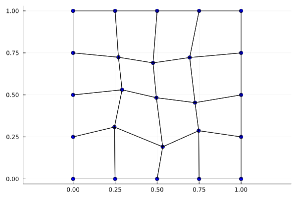
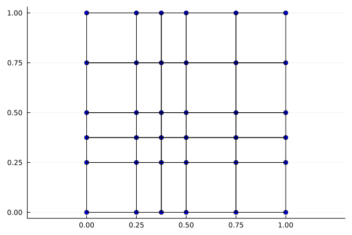
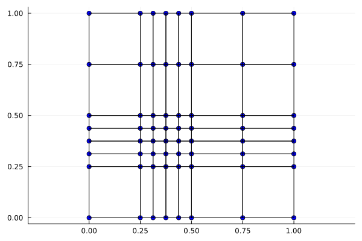
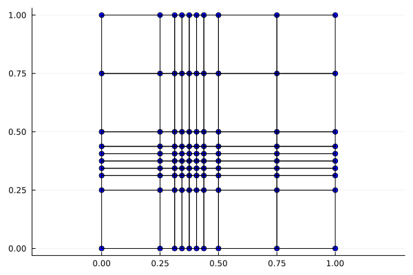

Outras malhas disponíveis
Aqui apresentaremos algumas opções de malha para utilizar diferentes da uniforme apresentada em Equação de Poisson 2D.
Malha com ruído
Essa é uma malha derivada da uniforme na qual seus nós internos se distanciam da posição original com um valor aleatório dentro de um intervalo específico. Este valor é o que chamamos de ruído, neste caso.
Passo a passo
Primeiro, construa a malha uniforme
Nx1, Nx2 = 4, 4
baseType = BaseTypes.linearLagrange
a = (0.0, 0.0)
b = (1.0, 1.0)
malha = monta_malha_2D_uniforme(baseType, Nx1, Nx2, a, b)Vamos plotar essa nova malha construída utilizando uma das funções internas de plot
plot_malha_2D(malha)
Agora, para aplicar o ruído é simples, basta fazer
malha = malha2D_adiciona_ruido(malha)
plot_malha_2D(malha)Resultando na malha
 Apenas destacamos que o ruído aleatório varia, naturalmente, entre execuções distintas do programa.
Malha com concentração de elementos em ponto focal
Essa próxima malha também deriva da uniforme, porém de forma distinta. Neste caso chamamos outra função montadora. Sua chamada é muito parecida com a primeira, com um dois parâmetros a mais: ponto_foco e precisao.
Nx1, Nx2 = 4, 4
baseType = BaseTypes.linearLagrange
a = (0.0, 0.0)
b = (1.0, 1.0)
ponto_foco = (0.375, 0.375)
precisao = 0
malha = monta_malha_2D_foco(baseType, Nx1, Nx2, a, b, ponto_foco, precisao)O ponto_foco é um ponto na malha que vai se tornar, se já não for, um ponto com quatro elementos adjacentes. Na figura abaixo, temos a malha com o ponto de foco em $(0.375, 0.375)$, ponto este que não existia na malha uniforme, de onde derivamos.
plot_malha_2D(malha)
A precisao é a quantidade de iterações de incremento de intervalos em torno do ponto_foco. Com precisao = 1 os intervalos mais próximos à esquerda e à direita do ponto focal serão divididos em dois, assim como os intervalos mais proximos acima e abaixo.
ponto_foco = (0.375, 0.375)
precisao = 1
malha = monta_malha_2D_foco(baseType, Nx1, Nx2, a, b, ponto_foco, precisao)
plot_malha_2D(malha)
Assim notamos que o número de elementos próximos ao ponto focal é maior que originalmente. Isso permite uma precisão maior em determinadas regiões.
ponto_foco = (0.375, 0.375)
precisao = 2
malha = monta_malha_2D_foco(baseType, Nx1, Nx2, a, b, ponto_foco, precisao)
plot_malha_2D(malha)